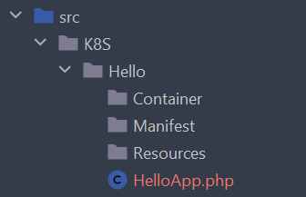

Apps
App is one of the basic concepts in Dealroadshow K8S Framework. You've probably already heard of Helm Charts. App in K8S Framework means the same thing - it is a collection of related manifests that will be dumped together. What are criteria of moving some set of Kubernetes resources to app? Well, this Kubernetes resources should be related, but what does related means in this context? Generally this should mean that a set of manifests must be deployed together. So you may define an app as a set of Kubernetes manifests for a single service in SOA architecture, or for a microservice in microservice architecture. If you have a big monolith platform - you are probably thinking on how to split it into smaller pieces, which can be deployed separately. The same criteria may apply to corresponding manifests.
Every app must implement AppInterface. Let's see what method this interface defines:
interface AppInterface extends ConfigurableInterface
{
public static function name(): string;
/**
* @return string The alias with which app was registered in AppRegistry
*/
public function alias(): string;
public function addManifestFile(string $fileNameWithoutExtension, APIResourceInterface $resource): void;
public function metadataHelper(): MetadataHelperInterface;
public function namesHelper(): NamesHelperInterface;
public function manifestNamePrefix(): string;
public function manifestConfig(string $shortName): array;
/**
* @return ManifestFile[]
*/
public function manifestFiles(): iterable;
}
Below, by walking through some important methods of AppInterface, we will better understand app's role. We don't discuss methods addManifestFile(), metadataHelper(), namesHelper(), manifestConfig() and manifestFiles() here - these are internal methods and they are not needed for you to understand apps. Some of this methods are discussed in other articles.
Names and aliases
Method AppInterface::name() defines default name of an app. What "default" means here? As you can see, this method is static, so different instances of an app class cannot return different names. But when do you need more than one instance of the same app class? Well, suppose you have RedisApp that contains manifests for Redis cluster:
namespace K8S\Redis;
use Dealroadshow\K8S\Framework\App\AbstractApp;
class RedisApp extends AbstractApp
{
public static function name(): string
{
return 'redis';
}
}
If you need just one Redis cluster - you don't need to configure anything. But what if you need two or more Redis clusters? It is possible to use RedisApp class to generate as many app copies as you need. All you have to do is register one RedisApp instance in AppRegistry for every cluster you want. So if you need Kubernetes manifests for two clusters - you need to register two RedisApp instances with different aliases. If you use K8S Bundle with Symfony application (recommended way of using K8S Framework), framework will register them for you - just configure them in config/packages/dealroadshow_k8s.yaml file:
| dealroadshow_k8s.yaml | |
|---|---|
1 2 3 4 5 6 7 8 9 | |
Important
Please note lines 7-9 in config above: we register two apps, first-redis and second-redis with RedisApp class, but without lines 7-9 there will be third app redis - class RedisApp will be found by Symfony DI as any other app class and will be added by it's name redis. So in order to avoid "default" app registration - register it explicitly by name, returned from app's method name(), and add option enabled: false.
So alias is a dynamic app name, that allows to have many different instances of the same app class with different names. And since by manifests naming convention all manifest names are prefixed with app alias - this ensures that there will be no two manifests with the same name when you generate two copies of an app.
Let's demonstrate this with example. Suppose you have class ClusterStatefulSet in your RedisApp:
namespace K8S\Redis\Manifest;
// ...
class ClusterStatefulSet extends AbstractContainerStatefulSet
{
public static function shortName(): string
{
return 'cluster';
}
// other methods
}
If you need just one Redis cluster and you did not configure any aliases in config file - Symfony will find your RedisApp class, and will create and register instance by alias, taken from RedisApp::name() method - thus when you dump manifests you'll have directory redis and manifest fileredis/cluster.stateful-set.yaml:
| redis/cluster.stateful-set.yaml | |
|---|---|
1 2 3 4 5 6 7 8 | |
As you see, StatefulSet will have name redis-cluster.
However, if you configure two aliases like shown above, after dumping manifests you'll have directories first-redis and second-redis, files first-redis/cluster.stateful-set.yaml and second-redis/cluster.stateful-set.yaml with corresponding names first-redis-cluster and second-redis-cluster.
Generating manifest only for a subset of apps
Suppose we have configured few instances of our RedisApp like in example above. Then, suppose we have some manifest class that we want to be generated only for second-redis app, but not for first-redis. This is easily done by using EnabledForApps PHP attribute that comes with K8S Framework:
#[EnabledForApps('second-redis')]
class MyExclusiveDeployment extends AbstractContainerDeployment
{
public static function shortName(): string
{
return 'exclusive';
}
// ...
}As a result, there will be generated file second-redis/exclusive.deployment.yaml but no first-redis/exclusive.deployment.yaml.
Accessing app alias inside manifest classes
Sometimes you need app alias in a manifest class. As mentioned in Manifests article, you may access app instance in any manifest by inherited property $app. So when you need app alias, access it like $this->app->alias():
class ClusterStatefulSet extends AbstractContainerStatefulSet
{
public function selector(SelectorConfigurator $selector): void
{
$selector
->addLabel('app', $this->app->alias())
->addLabel('component', static::shortName())
;
}
// other methods
}Every app instance will have it's alias injected by K8S framework, so feel free to use method AppInterface::alias() on any app object.
Summary
So, to summarize information about app names and aliases: in most of cases you don't need to configure app with aliases - by default they will be registered by their name, and alias will be the same as name. Configure app class with different aliases if you need more than one copy of the app generated.
Configuring manifest name prefixes
Method AppInterface::manifestNamePrefix() is implemented in AbstractApp class and makes default naming convention work:
public function manifestNamePrefix(): string
{
return $this->alias;
}
This method result is then used in DefaultNamesHelper class, which generates names for Kubernetes resources during manifests generation. It means that if you don't want your resource names to be prefixed with app names - just return an empty string from this method in your app class. Please read dedicated article if you want to change naming convention entirely.
App's directory structure
Console command k8s:generate:app that comes with K8S Bundle generates app class and certain directory structure, which is a recommended but not mandatory way to structure your apps. By default your generated app will look like follows:

Let's take a closer look at this structure. Every app class is stored in a dedicated directory / namespace, for example HelloApp class will be stored in K8S\Hello namespace, RedisApp - in K8S\Redis namespace and so on.
At top level of app directory there is app class itself and few nested directories.
Container dir
Store your container classes in this directory. Note that this does not applies to Container-prefixed manifest classes, like classes that inherit from AbstractContainerDeployment. Most of the time you don't have separate container classes, so this directory is often deleted from generated app skeleton.
Manifest dir
This is a most important directory in your app, since you should create your manifest classes in it. You may want to have some nested directories here, like Manifest\Deployments, Manifest\ConfigMaps and so on - feel free to create directory structure you like - Symfony and K8S framework will find and register your manifest classes by interfaces they implement, not by some exact file location.
Resources dir
If your app class extends AbstractApp, it will have method readFile(). Suppose your app has a deployment for some web service, and you want to mount config for your Nginx webserver from some ConfigMap. If you store nginx config in your ConfigMap class like string literal - it would be ugly. Instead you can store your nginx config as Resources/nginx.conf and then use method AbstractApp::readFile() to store it in your ConfigMap:
class NginxConfigMap extends AbstractConfigMap
{
public function data(StringMap $data): void
{
$data->add('config', $this->app->readFile('nginx.conf'));
}
public static function shortName(): string
{
return 'nginx';
}
}You may even want to implement more complex logic in your app class, for example method compileTemplate()- like if you want your nginx config to be generated from Twig template. In any of such scenarios, Resources dir is a place to store auxiliary files for your manifests.
Summary
In this article we got to know concept of apps better. If you did not yet read about containers - you should probably get to that article. You may also be interested in general lifecycle of manifest generation application.